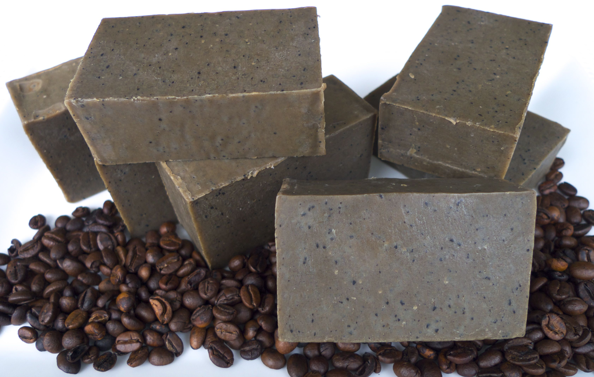

Mostly Fluid
History of Soap Making
The evidence of the world has of a soap-like substance dates back to around 2800 BC. The first known creators of this substance were the Babylonians, Mesopotamians, Egyptians, Greeks and Romans. It wasn't originally made for bathing but for cleaning cooking utensils and medicinal purposes.
All soaps are made from fat, oils and salts. The Babylonians made their soap by boiling fat with ashes. Today, you still use some type of fat or oil in the soap making process. One of the most common ways to make soap is by combining a fat (either animal or plant) with lye in a process called the cold process method.
In the early beginnings of soap making, it was an exclusive technique used by small groups of soap makers. The demand for soap was high, but it was very expensive and there was a monopoly on soap production in many areas. Over time, recipes for soap making became more widely known, but soap was still expensive. Back then, plant byproducts and animal and vegetable oils were the main ingredients of soap. The price of soap was significantly reduced in 1791 when a Frenchman by the name of LeBlanc discovered a chemical process that allowed soap to be sold for significantly less money.
More than 20 years later, another Frenchman identified relationships between glycerin, fats and acid what marked the beginning of modern soap making. With the 1800 discovery of another method of making soap ingredients, soap became even less expensive. Since that time, there have been no major discoveries and the same processes are used for the soap making we use and enjoy today.